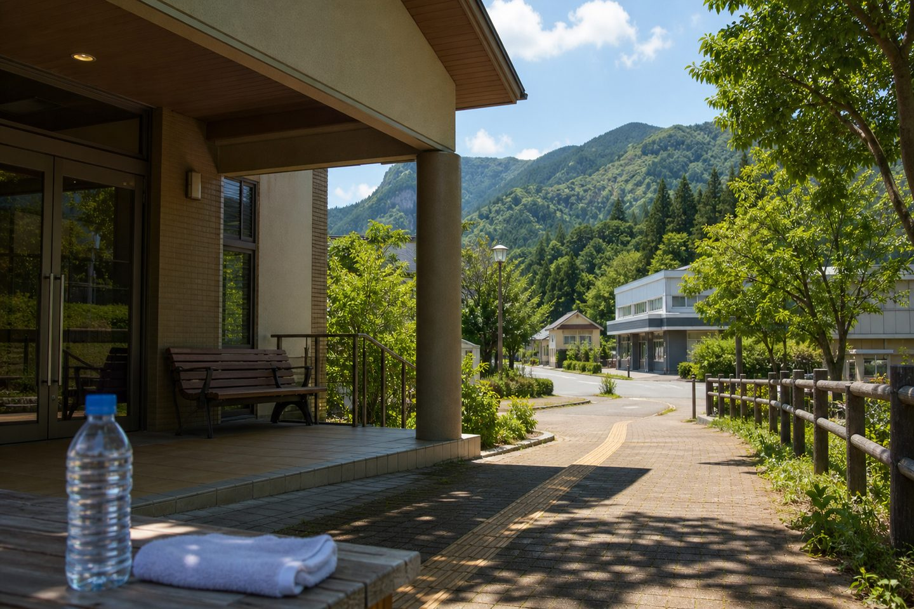
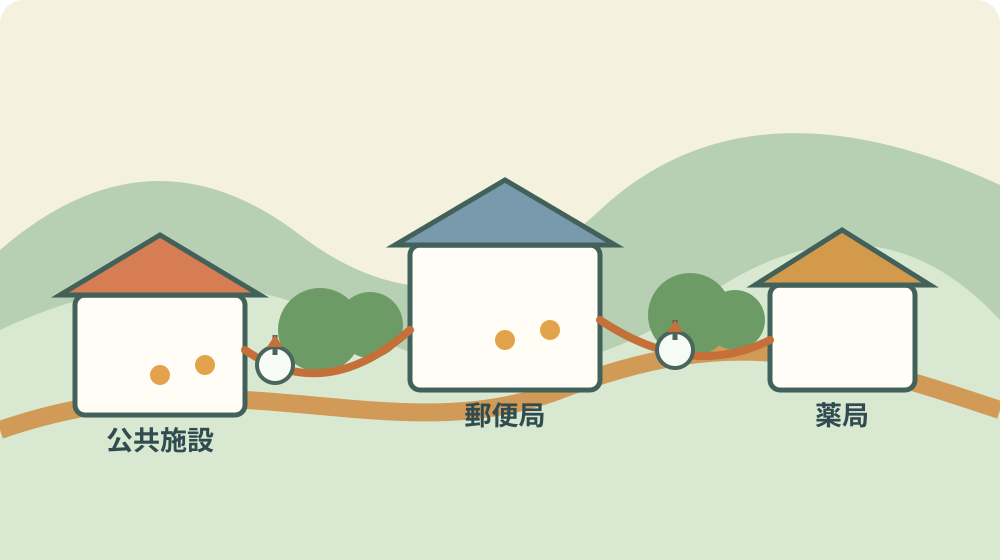
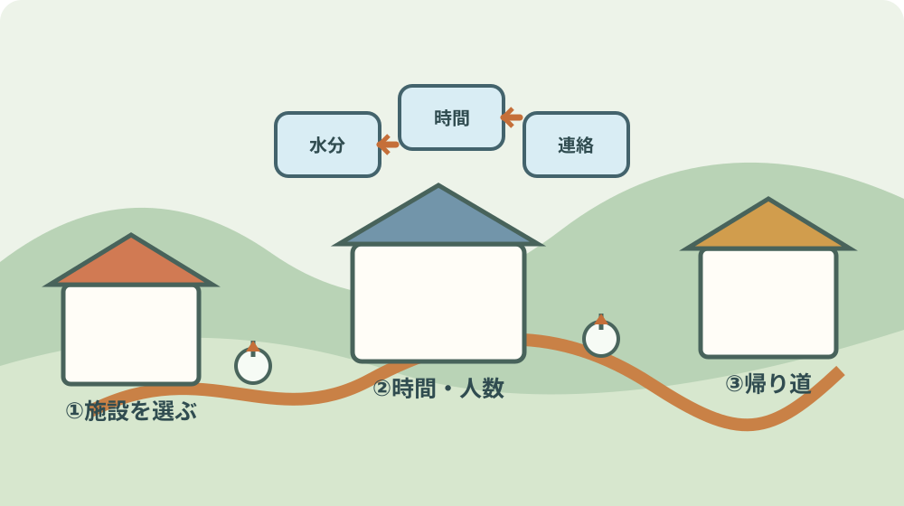

森町のクーリングシェルター｜9月の地区別避暑先

この記事の要点
Q. 2026年9月、森町で暑さを避ける場所は地区ごとにどこですか。
A. 森町のクーリングシェルターは、各施設の開始日から2026年10月28日までです。公共施設、郵便局、信用金庫、薬局が指定され、飯田・三倉・一ノ宮・城下・天方にも一覧があります。9月は場所だけでなく、開所時間、飲料、移動手段、当日の利用可否を家族で確認してください。
森町公式のクーリングシェルター一覧を、2026年9月4日に確認しました。この記事は、森町で暮らす高齢者と、町外から親の外出先を考える家族向けです。
クーリングシェルターは、極端な高温が見込まれるときに暑さを避けるための指定施設です。森町公式では「指定暑熱避難所」とも説明しています。
2026年の森町では、公共施設などの開所期間が2026年4月22日から10月28日までです。ウエルシア薬局森町店だけは2026年7月24日から始まります。
ここでいう開所日は、毎日いつでも利用できるという意味ではありません。森町公式は、熱中症特別警戒アラートが発表されたときに一般へ開放するとしています。
指定施設の開所時間と、クーリングシェルターとして使える場所は別に確認します。建物が開いていても、施設の状況により利用できない場合があります。
飲料等は各自で用意します。施設側で飲み物を配る案内ではありません。冷房の温度調節も利用者が行うものではありません。
9月の外出では、暑さが少し和らいだと感じても、本人の体調と帰りの移動を先に見ます。気温の印象だけで利用を決めないことが家族の段取りになります。
森町の一覧を、まず5つの種類に分ける
森町公式の2026年一覧は、公共施設、郵便局、浜松いわた信用金庫森町支店、杏林堂薬局森町店、ウエルシア薬局森町店に分かれています。
公共施設は、森町役場庁舎、森町町民生活センター、森町文化会館、森町保健福祉センターの4施設です。受入人数は施設ごとに異なります。
役場庁舎は1階ロビーで、受入人数は5人程度です。住所は森2101-1です。役場の用事がない人も、アラート時の指定場所として案内されています。
町民生活センターは1階ロビーで、受入人数は5人程度です。住所は森2101-2です。役場庁舎と近い場所なので、歩いて移る場合の順番も考えられます。
森町文化会館は1階エントランスロビーと1階研修棟で、受入人数は80人程度です。住所は森1485です。
森町保健福祉センターは1階交流広場で、受入人数は20人程度です。住所は森50-1です。森町公式の施設ページでも、健康、子育て、高齢者支援などの複合拠点と説明されています。
公共施設は場所が分かりやすい一方、受入人数は「程度」です。大人数の家族が同時に入れると決めつけず、当日の状況を確認します。

郵便局は森・三倉・一ノ宮・城下・天方・飯田にある
郵便局の指定施設は6局です。森町郵便局、三倉郵便局、一ノ宮郵便局、城下郵便局、天方郵便局、森町飯田郵便局が一覧に載っています。
森町郵便局は窓口ロビーで、受入人数は5人です。住所は森38-8です。森地区で役場や薬局へ行く動線と合わせて考えられます。
三倉郵便局は窓口ロビーで、受入人数は10人です。住所は三倉769です。三倉地区から町の中心へ出るより、まず公式一覧上の近い場所を確認する意味があります。
一ノ宮郵便局は窓口ロビーで、受入人数は3人です。住所は一宮1265-5です。受入人数が少ないため、家族複数人で使えるかは当日に確認します。
城下郵便局は窓口ロビーで、受入人数は4人です。住所は城下307です。城下の家から歩くのか、車で移動するのかで、暑さの負担は変わります。
天方郵便局は窓口ロビーで、受入人数は2人です。住所は鍛冶島6-1です。2人程度という数字は、親子3人で必ず入れるという意味ではありません。
森町飯田郵便局は窓口ロビーで、受入人数は3人です。住所は飯田2796-15です。飯田地区の家族が9月の避暑先を考えるとき、候補の一つになります。
6局共通の受入可能時間は10時から16時です。郵便局の通常の窓口時間と同じとは限らないため、時刻をこの数字で管理します。
9月の午後に体調が崩れた場合、16時を過ぎると郵便局の指定場所は一覧上の利用時間外です。帰宅の時間も含めて出発を決めます。
買い物や用事に重ねられる3施設
浜松いわた信用金庫森町支店は店内ロビーで、受入人数は5人です。住所は森2112-1です。
信用金庫の受入可能時間は、月曜日から金曜日の9時から15時までです。土曜日、日曜日、祝日は一覧の時間から外れます。
杏林堂薬局森町店は健康測定コーナーで、受入人数は2人です。住所は草ヶ谷413です。
杏林堂薬局森町店の受入可能時間は9時から21時45分までで、森町公式の一覧では月曜日から日曜日、定休日なしと記載されています。
ただし、薬局で買い物をする人と休憩する人の動線は同じではありません。健康測定コーナーの場所を入口で確認します。
ウエルシア薬局森町店は調剤待合室の一部で、受入人数は3人です。住所は森1531-1です。
ウエルシア薬局森町店の開始日は2026年7月24日です。ほかの施設と開始日が違うため、2026年9月は使えますが、2026年7月23日以前の一覧とは比較しません。
受入可能時間は月曜日から金曜日の9時から14時、15時から18時です。14時から15時は一覧上の時間に含まれません。
薬局は営業時間が長く見えても、クーリングシェルターの場所は店内の一部です。店舗全体を休憩場所と考えないでください。
地区別に見ると、施設数より移動の代替が見える
森町の公式一覧を地区名に寄せて読むと、森地区には公共施設、森町郵便局、信用金庫、2つの薬局があります。
三倉地区には三倉郵便局があります。郵便局以外の施設へ移る場合は、車を運転できる人、家族の送迎、公共交通などを別に確認します。
一宮地区には一ノ宮郵便局があります。受入人数は3人で、10時から16時の範囲です。日中に行ける人がいるかを家族で決めます。
天方地区には天方郵便局があります。受入人数は2人です。小さい数字だから価値がないのではなく、使う人数と時間を合わせる必要があります。
飯田地区には森町飯田郵便局があります。森町の東側で暮らす人が、中心部まで出ずに検討できる一覧上の場所です。
城下郵便局も、地区名を手掛かりに確認できます。公式一覧に地区別の推奨順位はないため、距離や道の安全を自分の家族で見ます。
園田地区について、今回確認した森町公式の指定施設一覧には園田名の施設が載っていません。これは園田に避暑できる場所が一切ないという意味ではなく、指定一覧上の記載がないという事実です。
指定施設が近くにない地区では、利用者本人が歩ける距離か、送迎者が帰りも対応できるか、施設の利用可否を電話で確認します。
町外に住む家族は、親に「一番近い施設へ行って」と言うだけでは足りません。玄関から施設入口までの道、帰宅手段、飲料の持ち方を一緒に決めます。
良い点：9月の生活圏に合わせて候補を持てる
森町のクーリングシェルターの良い点は、公共施設だけでなく郵便局、信用金庫、薬局にも候補があることです。
役場や保健福祉センターへ行く用事がある人は、暑さを避ける場所を生活の動線に重ねられます。特別な外出を一から作らずに済みます。
三倉や天方のように中心部から距離がある地区にも、郵便局の指定があります。町全体を一つの中心だけで考えない一覧です。
薬局の指定は、買い物や薬の受け取りと組み合わせやすい可能性があります。可能性であって、当日の利用を保証する情報ではありません。
2026年9月はウエルシア薬局森町店も対象期間に入っています。7月24日開始という追加情報が、前年の記憶だけでは見えない差です。
利用できる時間が施設ごとに違うため、朝、昼、夕方の候補を分けて持てます。時間の違いは、家族の送迎を組む材料になります。
受入人数も公式に書かれています。5人程度、80人程度、2人など、施設の規模を予想する手掛かりがあります。
森町保健福祉センターは、森町公式の別ページでも複合施設として説明されています。暑さを避ける場所と、健康や子育ての相談拠点が同じ建物にある点を確認できます。
注文したい点：場所の先に、地区ごとの移動情報を置きたい
森町公式の一覧は、指定施設、場所、住所、受入人数、時間を確認するには十分です。ただ、地区ごとの移動のしやすさまでは載っていません。
高齢者の外出で必要なのは、住所だけではありません。坂、横断、日陰、ベンチ、トイレ、帰りの手段が一つの動線にあります。
町外の家族が地図上で近いと判断しても、本人が歩けるとは限りません。徒歩距離と体感負担を同じものにしない確認が要ります。
受入人数が「程度」と書かれている施設では、混雑時の代替先が公式一覧からは分かりません。家族が第2候補まで決めておくと動きやすくなります。
熱中症特別警戒アラートが発表されたときに開放する仕組みなので、アラートがない日の休憩利用と同じ制度ではありません。
各施設の状況で利用できない場合がある点も、見落としやすい条件です。建物の営業時間だけを根拠に出発しないようにします。
郵便局の10時から16時、信用金庫の平日9時から15時、ウエルシアの14時から15時の休止を家族のメモに残します。
町の人が施設を開け、掲示を出し、場所を確保する負担はすでにあります。新しい案内を増やすなら、現場が更新し続けられる量に抑える必要があります。
私は、地区ごとの施設数を競うより、各地区で「本人が一人で行けるか」「誰が送るか」「戻れないときはどこへ連絡するか」を一枚で見られる方が実用的だと考えます。

対案・結論：9月は一人につき第1候補と第2候補を決める
クーリングシェルターを使う家族は、2026年9月の平日に一度だけ、親の自宅から第1候補までの移動を確認します。
第1候補は、公式一覧にある施設名と住所で決めます。第2候補は、混雑、休館、体調変化に備えて別の施設を選びます。
歩く場合は、玄関から入口までの時間を実測します。車の場合は、降車場所から入口までの距離と、運転者が戻る時間を確認します。
施設の入口で、指定場所がどこかを見ます。ロビー全体、健康測定コーナー、調剤待合室の一部など、指定範囲は施設ごとに違います。
水分を一人分用意します。飲料等は各自で用意するという公式案内に合わせ、家族が持って行く場合も、本人が飲める状態にします。
電話番号を一つ登録します。森町公式の問い合わせ先は健康こども課健康づくり係、電話0538-85-6330です。
今日できる小さな一歩は、親のスマートフォンか紙に「第1候補、第2候補、帰りの連絡先」を書くことです。
家族に残す記録：住所と時間を一枚にする
記録の一行目に、住んでいる地区と自宅住所を書きます。施設の住所と取り違えないよう、見出しを分けます。
二行目に第1候補を書きます。例えば、森町飯田郵便局、住所飯田2796-15、利用時間10時から16時、受入人数3人です。
三行目に第2候補を書きます。候補が公共施設なら、開所時間に準じるため、休館日や当日の開所を別に確認します。
四行目に飲料の準備を書きます。飲み物を施設が用意する制度ではないため、出発前に確認する項目です。
五行目に緊急連絡先を書きます。本人が一人で判断しにくい場合、誰が迎えに行くのかまで決めます。
森町の住所選びを考える人は、地区名だけでなく通勤、買い物、災害地図を重ねる森町の住所選びの記事も参照してください。避暑先の移動も、生活圏の確認と同じ地図で考えられます。
町外家族が親の生活圏を確認するなら、お盆に実家へ戻る三日間で歩く記事の考え方も使えます。日曜に町を家族で試す場合は、図書館と子育て支援センターを確認する記事と同じく、行って帰る時間を記録します。
大石の視点：避暑先は、施設の数より帰れる段取り
私は不動産の相談で、地図上の距離だけでは家族の負担が分からない場面を見てきました。森町のクーリングシェルターも同じです。
施設が13か所あることは安心材料です。ただし、指定施設の数がそのまま、本人が使える場所の数にはなりません。
家から玄関までの坂、車を止める場所、施設内の指定場所、飲料、帰宅の順番までが一つの段取りです。
町が用意している一覧を使う側も、現場の職員へ別の仕事を増やし過ぎないように、事前に公式情報を読みます。
私は、9月の一度の確認で結論を出す必要はないと考えます。本人が無理なく行ける候補が一つ増えれば、暑い日に家族が迷う時間を減らせます。
逆に、行ける場所が分からないまま「アラートが出たら考える」では遅れます。今日、紙一枚を作る価値はそこにあります。
まとめ：2026年10月28日までを、地区別に確認する
森町公式のクーリングシェルターは、各施設の開始日から2026年10月28日までです。
2026年9月は、森、三倉、一ノ宮、城下、天方、飯田の郵便局や、森地区の公共施設、信用金庫、薬局を候補にできます。
郵便局は10時から16時、信用金庫は平日9時から15時、杏林堂薬局森町店は9時から21時45分、ウエルシア薬局森町店は平日の9時から14時と15時から18時です。
今日の一歩は、親の自宅から第1候補まで実際の移動を確認し、第2候補と帰りの連絡先を紙に残すことです。
よくある質問
Q1. 森町のクーリングシェルターはいつまで開いていますか。
A1. 森町公式では、各施設の開始日から2026年10月28日までです。利用できる日時は施設の開所時間に準じ、熱中症特別警戒アラート発表時に一般へ開放されます。
Q2. 9月に飯田や三倉から行く場合、どこを確認しますか。
A2. 公式一覧では飯田郵便局と三倉郵便局が指定されています。郵便局の受入可能時間は10時から16時です。出発前にその日の開所と移動手段を確認してください。
Q3. 飲み物や予約は必要ですか。
A3. 森町公式は飲料等を各自で用意するよう案内しています。予約の案内はなく、施設の開所日時とルールに従って利用します。施設の状況で利用できない場合もあります。
指定施設、期間、受入人数、開所時間は変わることがあります。熱中症の症状がある場合は、指定施設の利用だけで判断せず、医療機関や救急への相談を優先してください。
参考にした公式情報
- クーリングシェルターの設置について／静岡県森町（指定施設、期間、時間、受入人数、利用上の注意を2026年9月4日に確認）
- 森町保健福祉センター／静岡県森町（施設の機能と所在地を2026年9月4日に確認）

磐田市で小さな不動産業を営みながら、森町の空き家・農地・実家じまいのご相談を受けています。地域ですでに払われている負担を認め、担い手と維持の段取りを具体名詞で書きます。
最終確認日：2026-09-04 ／ 本記事は公表情報と執筆者の見解を分けています。地区別の移動のしやすさ、当日の混雑、個別の利用可否は未確認です。